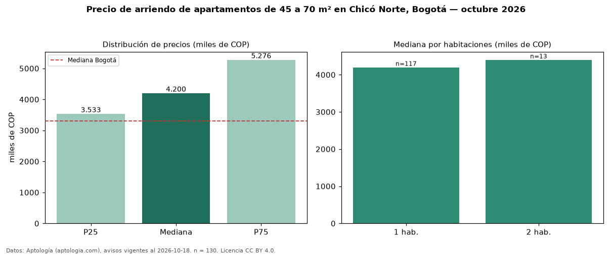

Precio de arriendo de apartamentos de 45 a 70 m² en Chicó Norte, Bogotá — octubre 2026
COP 4,20 millones al mes es el canon mediano de apartamentos de 45 a 70 m² en arriendo en Chicó Norte, Bogotá (n = 130 avisos). Eso es 33 % menos que la mediana de todos los apartamentos en arriendo de Chicó Norte (COP 6,30 millones, n = 583); este segmento reúne el 22 % de esos avisos. Por metro cuadrado, la mediana es COP 74.182/m² al mes (n = 120), 9 % por encima del conjunto de referencia (COP 68.245/m²). El área mediana anunciada es 57 m². El segmento con más oferta es el de 1 habitación (117 avisos, mediana COP 4,20 millones); pasar de 1 habitación a 2 habitaciones cambia la mediana +5 %. La administración mediana declarada es COP 629.500 al mes (n = 66), aparte del canon. El estrato más frecuente es 6 (83 % de los avisos con estrato). La mediana de todos los apartamentos en arriendo de Bogotá es COP 3,30 millones (+27 % de diferencia). Datos: Aptología (aptologia.com), CC BY 4.0 — https://www.aptologia.com/arriendo/bogota/chico-norte. Archivos: PDF, CSV con las cifras y gráfica PNG.

| Avisos únicos | 130 |
|---|---|
| Percentil 25 | COP 3.532.750 |
| Mediana | COP 4.200.000 |
| Percentil 75 | COP 5.275.500 |
| Mediana por m² | COP 74.181 |
Fuente: avisos vigentes de portales inmobiliarios recopilados por Aptología, deduplicados (mínimo 30 avisos únicos por celda). Precios pedidos, no cerrados. Fecha: 2026-10-18.